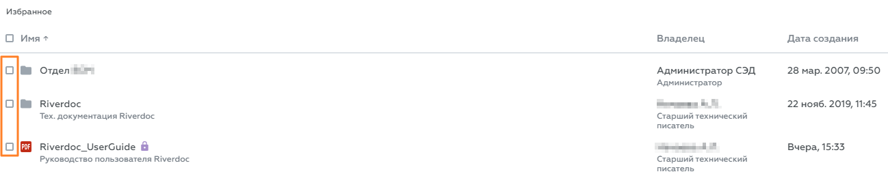

В Riverdoc можно выполнять операции с несколькими документами и/или папками сразу. Для этого нужно выбрать несколько объектов с помощью флажков, которые расположенных слева от объектов:

или с помощью флажков, расположенной в заголовке таблицы:
{kind=link}
Флажки для массового выбора документов и папок
Флажки в заголовке таблицы позволяет выбрать все объекты на странице. При переходе на другую страницу выделение снимается.
Массовые операции с документами и папками
При выделении одного или нескольких объектов появляется панель массовых операций:
Панель массовых операций
В левой части панели отображается информация о количестве выбранных объектов и кнопка Снять выбор, в правой части – список доступных действий, причём первые два действия выводятся в виде кнопок, остальные действия открываются при нажатии значка .
.
Чтобы снять выделение, нажмите кнопку Снять выбор на панели действий или, если выбраны все объекты на странице, флажок в заголовке таблицы.
Список доступных действий зависит от того, в каком подразделе выводится панель массовых операций. Возможны следующие массовые операции с объектами:
•Добавить/удалить из избранного;
•Скачать;
•Удалить.
 Примечание. Операции "Отвязать от..." и "Переместить в ..." недоступны из подразделов Недавние и Избранное.
Примечание. Операции "Отвязать от..." и "Переместить в ..." недоступны из подразделов Недавние и Избранное.
 Примечание. В виджете объекта, выбранного с помощью флажка, не отображается меню
Примечание. В виджете объекта, выбранного с помощью флажка, не отображается меню  , при этом значок Карточка документа
, при этом значок Карточка документа  отображается. Виджет появляется при наведении курсора мыши на объект.
отображается. Виджет появляется при наведении курсора мыши на объект.
См. также
Как создать несколько документов одного вида
Как создать несколько документов разных видов